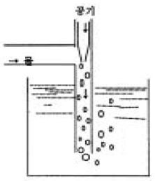
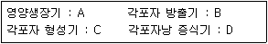
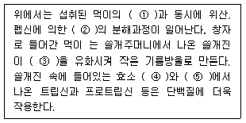

수산양식기사 (2005-03-06 기출문제)
1과목: 어류양식학
1. 잉어알은 수온 15~30℃ 범위에서는 급격한 변화만 없으면 정상적으로 부화한다. 그러나 부화율을 가장 높이는 최적수온은 다음 중 어느 것인가?
- 15~19℃
- 20~24℃
- 25~27℃
- 28~30℃
(정답률: 47%)

2. 어류에게 30g의 사료를 급이한 후에 다음날 10g의 변을 채취하였다. 이 사료의 겉보기 소화흡수율은 얼마인가?
- 약 6.7%
- 약 1.5%
- 약 15%
- 약 67%
(정답률: 74%)
3. 무지개 송어 식용어 양성을 위한 먹이 공급법과 거리가 가장 먼 것은?
- 1일분의 먹이를 한꺼번에 주지않고 2회로 나누어준다.
- 먹이가 바닥에 떨어지기 전에 다 받아먹을 수 있는 정도로 천천히 조금씩 주어야 한다.
- 100% 충분히 먹었을 때 사료의 효율이 가장 높다.
- 수온이 갑자기 너무 높아지거나 너무 낮아졌을 때는 먹이주는 양을 감소시켜야 한다.
(정답률: 89%)
4. 은어의 생태 습성으로 틀린 것은?
- 맑고 따뜻한 물을 좋아하며 여름에는 상류로 가을에는 하류로 이동한다.
- 산란은 남부에서는 9∼10월에 이루어지고 부화적온은 대략 12∼20℃이다.
- 은어의 소상은 일몰후에서 익일 일출전까지 밤에 이루어 진다.
- 은어의 먹이는 규조류, 녹조류, 남조류등을 좋아한다.
(정답률: 47%)
5. 다음 중 어업자원의 조성이나 야생동물의 보호 관리 등 자연 자원의 관리에 속하는 것은?
- 양식
- 어업
- 축양
- 증식
(정답률: 63%)
6. 참돔의 부화, 자어 및 치어 사육에 대한 설명 중 틀린 것은?
- 부화는 12∼23 ℃에서 가능하고,부화 최적 수온은 13∼14℃이다.
- 수정란은 20℃전후에서 약 45시간만에 부화하여 2.0∼2.3 mm의 자어로 된다.
- 알은 비중이 1.0245 이므로 알이 가라앉지 않도록, 해수의 비중이 그 이상으로 되게 한다.
- 부화 후 3∼4일이 지나면 첫 먹이를 준다.
(정답률: 60%)
7. 무지개 송어의 알이 수온 10℃ 정도일 때 부화 및 부상에 소요되는 시간은? (단, 산란된 때부터의 대략의 경과 일수 )
- 부화 15일, 부상 25일
- 부화 20일, 부상 40일
- 부화 30일, 부상 60일
- 부화 45일, 부상 75일
(정답률: 63%)
8. 틸라피아의 Oreochromis속의 식성은?
- 대형수초를 먹고 사는 초식성이다.
- 플랑크톤을 먹고 산다.
- 플랑크톤과 수초를 먹고 산다.
- 육식성이다.
(정답률: 43%)
9. 방어 양식 사업의 전체 운영경비 중 가장 큰 비중을 차지하고 있는 것은?
- 인건비
- 종묘구입비
- 시설관리비
- 사료비
(정답률: 96%)
10. 참돔의 일반적인 천연 산란 시기는?
- 1 ∼ 3월
- 4 ∼ 6월
- 7 ∼ 9월
- 10 ∼ 12월
(정답률: 62%)
11. 자주복알을 인공수정시킨 것을 대량으로 부화시킬 때의 방법 중 가장 부적당한 것은?
- 저면적이 넓은 수조(100~300 ℓ)로 유수식 또는 통기식정수에서 부화시킨다.
- 20매시(mesh)의 화학섬유 방충망에 알을 놓아 유수 수조속에 쌓아놓고 부화시킨다.
- 플라스크 같은 구형의 용기를 사용하여 알이 항상 유동상태에 놓이도록 하여 부화시킨다.
- 아트킨스 부화기속에 넣어서 부화시킨다.
(정답률: 54%)
12. 실뱀장어의 소하가 가장 많을 때는 언제인가?
- 일몰 때 부터 2~3시간 이내의 만조시
- 저녁 때(밤)의 소조시
- 낮부터 계속 비가 오는 날
- 북동풍이 불 때
(정답률: 80%)
13. 다음 중 사료를 가장 많이 먹을 수 있는 경우는? (단, 사료의 양은 자기 몸무게에 대한 비율로 한다.)
- 수온이 높고, 어체가 클 때
- 수온이 높고, 어체가 작을 때
- 수온이 낮고, 어체가 클 때
- 수온이 낮고, 어체가 작을 때
(정답률: 93%)
14. 넙치의 종묘육성에 필요한 광선의 밝기로 가장 적당한 것은?
- 2,000 럭스 이하
- 5,000 럭스 정도
- 10,000 럭스 이하
- 20,000 럭스 이상
(정답률: 48%)
15. 0.2∼2g 정도 크기의 뱀장어를 무엇이라고 부르는가?
- 실뱀장어
- 검둥 뱀장어
- 새끼 장어
- 유리 뱀장어
(정답률: 70%)
16. 무지개 송어 양식장 용수의 이상적인 용존 산소량의 기준은?
- 2∼3㎎/ℓ
- 4∼5㎎/ℓ
- 6∼7㎎/ℓ
- 10∼11㎎/ℓ
(정답률: 95%)
17. 다음 중 틸라피아를 수컷으로 성전환 시키기 위해 호르몬을 처리하고자 한다. 그 방법으로 틀린 것은?
- 탱크 내 사육밀도를 1m2당 30~50㎏ 정도로 한다.
- 생식선이 분화되기 전에 처리하여야 한다.
- 대체로 20∼30일간 처리한다.
- 호르몬제를 사료에 섞어서 공급한다.
(정답률: 45%)
18. 잉어 종묘 생산에 가장 잘 이용되는 먹이 생물은?
- 키토세로스(Chartoceros)
- 모노크리시스(Monochrysis)
- 클로렐라(Chlorella)
- 다프니아(Daphnia)
(정답률: 48%)
19. 미꾸라지 운반에 관한 사항 중 틀린 것은?
- 양식지에서 기른것은 비온 뒤에 잡아서 운반하는 것이 좋다.
- 운반전에 2~3일 굶기는 것이 좋다.
- 작은 미꾸라지와 큰미꾸라지를 같은 바구니에 섞어서 운반하는 것이 작은 것만을 운반하는 것보다 적게 죽는다.
- 광주리에 담고 광주리위에 얼음을 얹어 운반하는 것이 좋다.
(정답률: 38%)
20. 다음은 에어레이션 장치이다. 어떤 에어레이션 장치인가?

- U자관 에어레이션 장치
- 하향류 변법 U자관 에어레이션 장치
- 벤튜리관 에어레이션 장치
- 낙차이용 에어레이션장치
(정답률: 70%)
2과목: 무척추동물양식학
21. 피조개 발생과정 중 D상 자패로 되는데 소요되는 시간은? (단, 사육수온은 20℃ 내외 일 때임.)
- 12시간 전후
- 24시간 전후
- 48시간 전후
- 72시간 전후
(정답률: 37%)
22. 굴유생 부착 조건으로 적합치 않은 사항은?
- 해수 중 Cu 이온이 0.⑤∼0.6 mg/ℓ일 때 부착이 좋다.
- 부니질이 적은 곳의 부착유생이 생존율이 좋다.
- 주로 수면하 0.5∼1.5m 층에 많이 부착한다.
- 유속은 5∼7cm/sec 정도인 곳이 부착성적이 좋다.
(정답률: 22%)
23. 진주양식에 있어서 세포패 라고 하는 것은?
- 수술용의 외투막 절편에 사용하는 진주조개
- 수술하지 않은 대형 진주조개
- 수술을 끝낸 진주조개
- 진주핵을 수확한 후의 대형조개
(정답률: 72%)
24. 대하의 인공종묘 생산에 관한 것 중 맞는 것은?
- 모하의 크기는 50∼100g 되는 것을 많이 사용한다.
- 방란 비율은 비교적 낮다.
- 방란은 해지기 직전에 한다.
- 모하는 사육탱크에서 사육시킨 것 중에서 성숙한 암컷을 택해서 주로 사용한다.
(정답률: 39%)
25. 보리새우의 양성에 관한 설명으로 적합하지 못한 것은?
- 우리나라에서는 축제식 양성방법을 주로 택하고 있다.
- 축제식 양성지를 이용할 때 수심은 2m 내외를 유지할 수 있어야 한다.
- 보리새우는 저수온에 강하기 때문에 서, 남해안이 양식 적지이다.
- 양성시 먹이는 냉동먹이보다는 살아있는 먹이가 그 효율이 더 좋다.
(정답률: 69%)
26. 꽃게의 양성과정 중에 일어나는 심한 공식현상을 방지하기위해서 해주어야 할 가장 좋은 대책은?
- 유수식 시설로써 해수의 유통을 좋게 할 것
- 해수비중과 투명도를 알맞게 해줄 것
- 먹이를 여러번 주고 해조류의 번식을 억제할 것
- 사육밀도를 적게 해주고 먹이를 충분히 줄 것
(정답률: 77%)
27. 피조개의 인공종묘 생산에서 부화까지의 과정 중 가장 거리가 먼 것은?
- 산란하지 않은 어미를 산란임계 온도보다 3~5℃ 낮은 순환구조에 수용한다.
- 채란시는 25~29℃의 해수로 옮겨 채란하는 것이 편리하다.
- 수정이 끝나면 1‾시간 지난 후 수정란을 깨끗이 씻는다.
- 수정란은 곧 순환수가 있는 부화탱크로 옮겨 부화를 기다린다.
(정답률: 41%)
28. 참가리비 귀매달기 수하식 양성시 각장의 적정 크기는?
- 1∼3cm
- 3∼5cm
- 5∼7cm
- 7∼9cm
(정답률: 35%)
29. 진주조개의 생태에 관한 것 중 맞는 것은?
- 전세계적으로 온대구에 분포한다.
- 성패기에는 주로 15m 이심에 산다.
- 방란·방정은 수온이 24∼25℃ 이상에서부터 시작된다.
- 방란·방정 후 약 12시간 내외에서 D형 유생이 된다.
(정답률: 57%)
30. 다음 패류 중 방양시 종묘를 하나하나 바닥의 저질에 모심기 하듯이 심어야 하는 조개는?
- 대합
- 새조개
- 키조개
- 큰이랑피조개
(정답률: 95%)
31. 전복의 자원 조성을 위한 관리에서 가장 효과가 있는 것은?
- 투석
- 정지
- 객토
- 갈이
(정답률: 53%)
32. 다음 종묘 생산에 관한 것 중 맞는 것은?
- 채란용 어미의 선택 시기는 산란기의 전기나 중기가 좋다.
- 부화한 어린 유생은 위험기를 거치는데, 주로 용존산소의 양 때문이다
- 무척추동물의 유생은 어류 유생에 비해 먹이 선택성이 까다롭지 않다
- 치패가 비부착성인 종묘들은 주로 침설식 시설로 채묘한다
(정답률: 62%)
33. 다음 중 보리새우 습성에 해당 없는 것은?
- 성주기성
- 군집성
- 추광성
- 잠복성
(정답률: 61%)
34. 다음 중 우럭에 대한 설명으로 틀린 것은?
- 상품가치는 근육질로 된 긴 수관이다.
- 연안의 하구 가까이에 많이 산다.
- 환경변화에 대한 저항성이 강하다.
- 부착력이 강해 부착기질에 의한 채묘가 가능하다.
(정답률: 67%)
35. 다음 대합의 양성과정인 조위망식과 개방식 양성을 비교한 것 중 잘못된 내용은?
- 조위망식은 조간대에서 이루어지지만, 개방식은 외해쪽으로 저질환경에 따라 장소가 결정된다.
- 조위망식은 치패의 유실을 막기 위해 조위망을 설치하지만 개방식은 지반이 낮거나, 간출시간이 짧은 곳에서 한다.
- 조위망식은 방양 장소에 따라 성장의 차이를 보이지만, 개방식은 일정한 편이다.
- 조위망식은 방양 후 관리가 따로 필요 없지만, 개방식은 저질개선을 위한 노력을 해야만 한다.
(정답률: 62%)
36. 양식생물의 유생의 발달과정이 잘못된 것은?
- 진주조개 : 알 → 담륜자 → D상유생 → 성숙부유자패
- 대하 : 알 → 노우플리우스 → 미시스 → 조에아→ 포스트 라바
- 전복 : 알 → 담륜자 → 피면자 → 포복기 유생
- 해삼 : 알 → 오우리쿨라리아 → 돌리올라리아→ 저서유생
(정답률: 96%)
37. 전복용 배합사료의 필요조건이 아닌 것은?
- 기호성이 좋고, 높은 성장을 얻을 수 있을 것
- 수중에서 보형성이 좋고, 방부성도 우수해야 할 것
- 크기는 관계없으나, 모양은 둥근 것이 좋다.
- 취급이 용이하고, 경제성이 있을 것
(정답률: 79%)
38. 참문어의 가두리양성 시설 시 가장 주의할 점은?
- 먹이공급문제
- 공식문제
- 조류유통문제
- 탈출문제
(정답률: 45%)
39. 소라의 생태와 종묘생산에 관한 것 중 맞는 것은?
- 암컷의 생식소는 유백색이다
- 부유 유생의 부유 기간은 길고 먹이를 필요로 한다.
- 부유 유생의 꼬리가 없어지고 둥글어지면서 침강한다.
- 합성수지로 만든 투명하거나 반투명인 판에다 먹이생물인 Navicula sp. 등을 번식시킨 다음 이 위에 치패를 부착시킨다.
(정답률: 43%)
40. 다음 중 바지락 양식에 관한 설명으로 적절하지 못한 내용은?
- 완류식 채묘기로 제방식, 풀식, 섶꽂이식을 사용하며, 이중에 섶꽂이식을 많이 사용한다.
- 치패가 많이 발생하는 곳은 일반적으로 하구 가까이인데, 이곳은 지반변동이 많은 곳이다.
- 종묘의 방양방법에는 석시법과 조시법이 있는데, 일반적으로 조시법이 일손이 더 많이 들어간다.
- 양성장의 지반은 지나치게 딱딱하지 않게 갈이를 해주어 잠입이 쉽게 만들어 주어야 한다.
(정답률: 58%)
3과목: 해조류양식학
41. 미역 배우체 생장에 있어서 수온과 광선과의 관계가 옳은 것은?
- 15℃ 면 500 lux 이하
- 20℃ 이하 - 2,000~6,000 lux
- 24℃ 이상 - 3,000 lux 이하
- 28℃ 이상 - 5,000 lux 이하
(정답률: 48%)
42. 둥근김과 다른 양식종 김과의 차이는?
- 자웅성의 유무
- 여름김의 유무
- 2차아의 유무
- 사상체의 유무
(정답률: 67%)
43. 참김에서 중성포자의 형성이 중지되는 최저온도는?
- 22℃
- 20℃
- 18℃
- 10℃
(정답률: 34%)
44. 다시마 양식관리에 있어 솎음은 4∼5월경에 친승 1m 당 몇 개체가 남도록 해야 가장 좋은가?
- 70 ∼ 100개체
- 50 ∼ 70개체
- 25 ∼ 50개체
- 100개체 이상
(정답률: 64%)
45. 다음 중 풀가사리의 직립체 발생 시기는?
- 9월 상순∼11월 하순
- 11월 상순∼1월 하순
- 1월 상순∼3월 하순
- 3월 상순∼5월 하순
(정답률: 70%)
46. 조가비 사상체의 수하식 배양의 장점은?
- 물갈이가 쉽다.
- 과포자의 잠입이 균일하다.
- 병해관리가 쉽다.
- 수온변화가 적다.
(정답률: 35%)
47. 다음 중 주광성을 갖는 것은?
- 미역의 유주자
- 김의 과포자
- 우뭇가사리의 사분포자
- 홑파래의 배우자
(정답률: 70%)
48. 외양의 깊은 곳에 가장 알맞은 김양식 시설은?
- 섶
- 뜬흘림발
- 뜬발(지네발)
- 뜬발(그물발)
(정답률: 73%)
49. 꼬시래기의 포자 방출을 유발시키는 방법으로 가장 거리가 먼 것은?
- 모조를 담수에 24시간 담근 후 해수에 옮긴다.
- 2∼4시간 음건 시킨다.
- 햇볕에 1∼2시간 노출시켰다 해수에 넣는다.
- 수온을 10℃올려 주었다 하강시킨다.
(정답률: 68%)
50. 각 포자 방출 억제법이 될 수 없는 것은?
- 고비중 처리
- 단일 처리
- 100% 습도 처리
- 온도 처리
(정답률: 79%)
51. 김사상체의 생장단계를 차례로 연결한 것은?

- A - B - C - D
- A - C - B - D
- A - D - C - B
- A - C - D - B
(정답률: 50%)
52. 호상균의 생장적온은?
- 5 - 10℃
- 15 - 20℃
- 20 - 25℃
- 5℃ 이하
(정답률: 50%)
53. 다음중 김냉장발의 이용 목적에 합당치 못한 것은?
- 갯병 대책
- 양식기간의 연장
- 뜬흘림발 양식
- 섶 양식
(정답률: 64%)
54. 녹반병의 증상과 가장 가까운 갯병은?
- 흰갯병
- 구멍갯병
- 의사 흰갯병
- 호상균병
(정답률: 37%)
55. 싹갯병의 발병원인과 관계가 없는 것은?
- 싹의 밀생으로 인한 생장 둔화
- 많은 담수의 일시적 유입
- 고기온이나 강풍시의 노출 과다
- 기생 생물의 착생
(정답률: 59%)
56. 미역 배우체의 성숙과 아포체 발아의 적온은?
- 9∼12℃
- 13∼16℃
- 17∼20℃
- 21∼24℃
(정답률: 71%)
57. 다음 중 채취된 다시마의 건조장으로 가장 안 좋은 곳은?
- 장시간 햇볕을 받을 수 있고 경사가 완만한 곳
- 건조는 빠르나 색택이 검어지는 철사질 건조장
- 건조상태가 좋고 광택이 좋아지는 모래땅 건조장
- 색택을 곱게 만들어 주는 흙바닥 건조장
(정답률: 59%)
58. 미역의 인공채묘용으로 가장 적합한 포자엽(성실엽)은?
- 채취즉시
- 담수에다 5분간 담근 것.
- 찬 해수에다 5분간 담근 것.
- 수시간에서 하루밤 정도 그늘에다 둔 것.
(정답률: 73%)
59. 우뭇가사리의 성숙한 모조를 새끼에 끼워서 바닥에 감아주는 이식작업을 할 때 특별히 주의해야 할 사항 4가지로 가장 적당한 것은?
- 건조방지, 직사광선방지, 수온상승 억제, 이식시간의 단축
- 건조방지, 직사광선 방지, 물리적 충격방지, 수온 상승
- 건조방지, 직사광선방지, 조류소통, 비중변화
- 건조방지, 비중변화, 이식시간, 직사광선
(정답률: 48%)
60. 미역의 생장과 수온과의 관계 중 잘못된 것은?
- 유주자의 방출과 착생은 17∼20℃가 최적이다.
- 23∼24℃에서 배우체의 암수 구별이 뚜렷하고 가장 잘 성장한다.
- 유엽의 생장은 가을 15∼17℃ 때가 가장 좋다.
- 5∼10℃에서 성엽체의 생장이 양호하다.
(정답률: 60%)
4과목: 양식장환경
61. 질화박테리아는 다음 중 어디에 속하는 세균인가?
- 광무기독립영양세균(photolitho-autotrophic bacteria)
- 광유기종속영양세균(photo-organoheterotrophic bacteria)
- 화학무기독립영양세균(chemolitho-autotrophic bacteria)
- 화학유기종속영양세균(chemo-organoheterotrophic bacteria)
(정답률: 50%)
62. 소화관과 부레사이에 기도가 발달되어 있지 않는 종류는?
- 은어
- 뱀장어
- 참조기
- 잉어
(정답률: 29%)
63. 몸표면이 판상(板狀)의 비늘로 덮여 있는 종류는?
- 거북복
- 쥐치
- 가시복
- 개복치
(정답률: 57%)
64. 다음 중에서 발생 도중에 글로키듐(glochidium)이라는 피면자 단계의 유생시기를 거치며, 담수어의 아가미와 지느러미에 기생하며, 담수산 조개로서는 가장 크고, 담수 양식 진주 모패로 이용하는 이 패류는 어느 것인가
- 키조개
- 가리비
- 대칭이
- 진주조개
(정답률: 57%)
65. 다음 중 굳비늘(ganoid scale)을 가지는 종류는?
- 정어리
- 연어
- 철갑상어
- 상어
(정답률: 46%)
66. 홍조류만 가지는 생식세포는?
- 사분포자
- 과포자
- 유주자
- 내생포자
(정답률: 43%)
67. 잉어란(卵)의 성질은?
- 부성 유구란
- 비점착란
- 점착 분리란
- 침성 밀집란
(정답률: 47%)
68. 톳의 영양번식과 관련있는 것은?
- 배아
- 배아지
- 포복지
- 연쇄체
(정답률: 72%)
69. 진골류 어류 중 진화상으로 보아 가장 원시적인 어종은?
- 붕장어
- 청어
- 멸치
- 붕어
(정답률: 78%)
70. 다음 각 항중 계통 관계상 가까운 것 끼리만 묶어 놓은 것은?
- 불가사리 - 말미잘 - 고막
- 달팽이 - 오징어 - 전복
- 모시조개 - 해면 - 해삼
- 제첩 - 게 - 성게
(정답률: 31%)
71. 어류의 먹이 소화과정의 일부를 설명한 것이다. ( )속에 알맞는 말은?

- ①분해과정, ②탄수화물, ③지방, ④리파제, ⑤간
- ①분쇄작용, ②단백질, ③지방, ④아밀라제, ⑤간
- ①분쇄작용, ②지방, ③단백질, ④티아스타제, ⑤창자
- ①분해과정, ②단백질, ③탄수화물, ④인버타제, ⑤창자
(정답률: 48%)
72. 어류의 지느러미에 관해서 설명한 것 중 틀린 것은?
- 어류의 지느러미는 방향을 잡고 이동하거나 멈추기 위하여 사용된다.
- 고등어, 삼치, 다랑어는 뒷지느러미 뒤쪽에 발달된 근육질의 기름지느러미가 있다.
- 경골어류는 지느러미 줄기와 지느러미 막으로 구성되어 지느러미를 자연스럽게 움직일 수 있는 종이 대부분이다.
- 원구류의 지느러미는 수직지느러미가 몸의 정중선을 따라 주름 모양으로 다소 퇴화되어 있다.
(정답률: 34%)
73. 김 류의 특징이 아닌 것은?
- 정자를 만들어 내는 웅성생식기관이 모여 있는 조정기반이고, 자성생식기관의 모임인 조과기반은 적자색으로 나타난다.
- 세포의 배열상태 및 영양세포가 생식세포로 될 때의 분열형식 등도 분류기준으로 이용된다.
- 엽상체에서 떨어져 나온 과포자는 굴패각과 같은 조가비나 그 밖의 석회질로 된 물체속에 잠입하여 균사모양의 사상체로 자란다.
- 몸은 2층의 세포로 되어 있고, 각 세포는 별모양으로된 2개의 엽록체를 가진다.
(정답률: 53%)
74. 어류의 성장을 좌우하는 요인으로 가장 거리가 먼 것은?
- 수온
- 섭이량
- 산소량
- 회유범위
(정답률: 77%)
75. 굴 중에서 암수한몸이고, 산란된 알은 피면자기까지 모체의 외투강 내에서 발생하는 유생종은 어느 종인가?
- 참굴
- 버지니아굴
- 봄베이굴
- 벗굴
(정답률: 55%)
76. 새파(gill raker)의 수가 많고 길며 밀생되어 있는 어류의 식성은?
- 잡식성
- 육식성
- 플랑크톤식성
- 기생성식성
(정답률: 45%)
77. 다음 새우류 중 포란종은 어느 것인가?
- 대하
- 도화새우
- 보리새우
- 젓새우
(정답률: 16%)
78. 원구류의 난소는 몇 개인가?
- 1개
- 2개
- 3개
- 4개
(정답률: 69%)
79. 난해성 어류인 쥐치류의 자치어는 부유성 해조류 아래에서 생활하다가, 유영 능력을 갖춤에 따라 부유성 해조류를 떠나 성장에 적합한 해역으로 이동한다. 이러한 회유는 다음 중에서 어느 것인가?
- 유기 회유
- 성육 회유
- 색이 회유
- 산란 회유
(정답률: 78%)
80. 암컷의 생식소는 황적색으로 3∼4월이 산란 성기가 되는 조개는?
- 참굴
- 진주조개
- 키조개
- 진주담치
(정답률: 50%)
5과목: 수산질병학
81. 해수의 염소량을 측정해서 염분량으로 환산하는 식 중 옳 은 것은?
- S = 1.80655 Cl
- S = 1.8⑤ Cl
- S = 0.03+1.80655 Cl
- S = 1.8⑤ Cl+0.30
(정답률: 72%)
82. 김양식장에서 COD가 높으면 어떠한가?
- 염양염이 많으므로 생육이 좋다.
- 생리적 장애에 의한 암종병이 생기거나 엽체가 녹아 없어진다.
- 광선이 차단되므로 호흡장애가 있다.
- 수온이 상승요인이 되어 김잎의 끝녹임이 생긴다.
(정답률: 56%)
83. 김양식장의 환경조건 중 틀린 것은?
- 강우나 강설은 산소와 탄산가스를 공급하는 중요 요인이다.
- 인(P)은 김의 초기성장에 매우 중요한 역할을 한다.
- 안개는 항상 김의 성장에 해롭다.
- 질소(N)는 김양식장에서 가장 중요한 영양염류이다.
(정답률: 53%)
84. 다음 물 속에서 동물의 산소소비에 대하여 설명한 것 중 잘못 표현된 것은?
- 동물의 산소소비는 온도가 상승함에 따라 증가한다.
- 동물 개체당 산소소비량은 큰 개체일수록 많다.
- 단위체중당 산소소비량은 대형으로 성장할수록 많다.
- 먹이를 소화하는 동안은 더 많은 산소를 소비한다.
(정답률: 71%)
85. 연간 생산량이 180톤인 잉어 양어장에서 사료계수 1.8, 사료 중 단백질 함량 30%, 단백질 중의 질소 함량을 16%라 할 때, 1일 공급되는 총질소량은 얼마나 되는가? (단, 1년을 360일로 계산한다.)
- 432 Kg
- 342 Kg
- 43.2 Kg
- 34.2 Kg
(정답률: 28%)
86. 양어지의 pH안정을 위해서 가장 중요한 역할을 하는 성분은?
- 탄산가스
- 중탄산염
- 탄산칼륨
- 염분
(정답률: 77%)
87. 식물플랑크톤에 대해 맞는 것은?
- 낮에 O2를 생산하고 밤에 CO2생산
- 낮에 CO2 생산하고 밤에 O2생산
- 낮에 O2 생산하고 밤에도 O2생산
- 낮에 CO2 생산하고 밤에도 CO2생산
(정답률: 67%)
88. 생물학적 여과과정에서 Nitrite를 Nitrate로 분해하는데 관여하는 세균은?
- Nitrosomonas
- Nitrobacter
- Pseudomonas
- Corynebacterium
(정답률: 73%)
89. 암모니아의 어류에 대한 독성이 가장 강해지는 조건은?
- 농도 용존산소
- 높은 pH
- 염분함유
- 경도가 높은물
(정답률: 77%)
90. 식물플랑크톤이 적당히 번식한 양어지에서 pH는 언제 가장 높아지는가?
- 정오
- 해뜨기전
- 해지기전
- 자정
(정답률: 45%)
91. 하수(下水)나 정체호저수(停滯湖底水)의 저니(底泥)가 흑색이 되는 이유는?
- 유기질소화합물의 혐기성(嫌氣性)분해로
- 탄소화합물의 혐기성분해로
- 황화수소가 발생되기 때문에
- 황화수소와 철이 반응해서
(정답률: 58%)
92. 틸라피아를 원형수조에서 양성하고자 한다. 탱크 내의 오물을 잘 제거할 수 있고 또 사육어류의 적절한 운동을 위한 탱크 내의 유속은 얼마가 적당한가?
- 초당 0.5 ~ 1.0cm
- 초당 3.5 ~ 5.0cm
- 초당 7.5 ~ 10.0cm
- 초당 20cm 이상
(정답률: 67%)
93. 침전조에 관한 설명 중 잘못된 부분은?
- 면적이 좁아도 좋다.
- 유속이 느릴수록 좋다.
- 침전조의 기능으로 생물 여과조의 부담을 줄인다.
- 중력(重力)에 의하여 기능을 발휘한다.
(정답률: 60%)
94. 강부식성을 대표하는 초기 지표 생물은?
- Amoeba
- Euastrum
- Volvox
- Leptothrix
(정답률: 37%)
95. 다음 중 적극적인 수질관리가 필요한 양식법은?
- 정수식 양식
- 유수식 양식
- 축제식 양식
- 순환식 양식
(정답률: 53%)
96. 용액 1ℓ에 AgNO3 18.0g 가 녹아 있다. 이 용액의 N 농도를 구하시오? (AgNO3 = 170)
- 0.212 N
- 0.106 N
- 0.⑤6 N
- 0.162 N
(정답률: 44%)
97. 폐쇄적 순환 양식장에서 사용하는 생물학적 여과의 무기물화 과정에 대한 설명이 옳은 것은?
- 여과조에 살고 있는 타가 영양 세균의 분해작용으로 유기물이 무기물로 된다.
- 무기물화 시키는 과정이 생물학적 여과의 최종 단계이다.
- 무기물화 과정의 효율은 고형 유기물의 양이 많을수록 높아진다.
- 이 과정은 혐기적 조건하에서 그 반응이 활발해지므로 밀폐된 곳일수록 분해 반응이 효율적이다.
(정답률: 36%)
98. Winkler 법으로 용존산소를 정량할 때 주의해야 할 사항 중 옳지 않는 것은?
- 채수기로 채수했을때 다른 항목의 시수보다 용존산소용시수를 제일 먼저 산소병에 채수해야 한다.
- 용존 산소병에 채수할 때는 기포가 생기지 않도록 채수해야 한다.
- 산소 고정시약을 넣고 잘흔들어 준 후 즉시 황산을 넣고 침전을 녹인후 Na2S2O3용액으로 적정해야 한다.
- 시수 중 NO-2 이온이 많은 경우 고정시약에 NaN3 를 첨가한 변법을 사용해야 한다.
(정답률: 56%)
99. 암모니아 독성에 대한 설명 중 맞는 것은?
- 암모니아의 독성은 pH가 증가할수록 커진다.
- 암모니아의 독성은 이온성 암모니아량에 달려 있다.
- 암모니아의 독성은 용존산소와는 관계가 없다.
- 암모니아 배설동물은 암모니아 독성의 영향이 없다.
(정답률: 69%)
100. 양어지의 환경을 개선하기 위하여 경운을 할 경우에 기대되는 효과는?
- 산소 공급의 억제
- 유해생물의 증가
- 혐기성 분해의 촉진
- 호기성 분해의 촉진
(정답률: 67%)